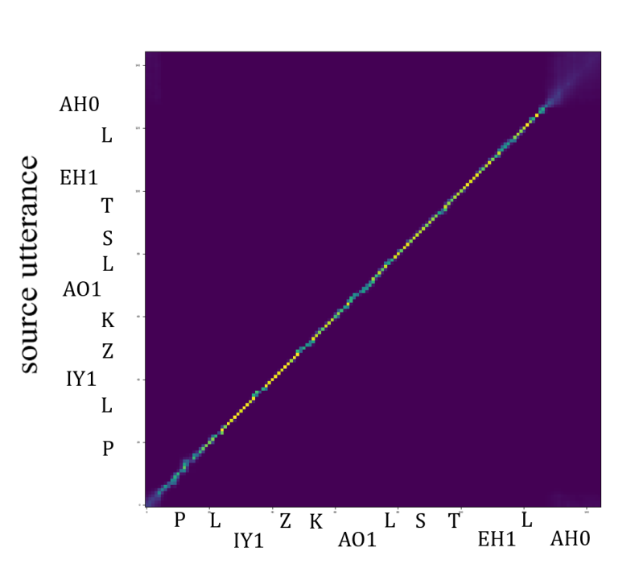
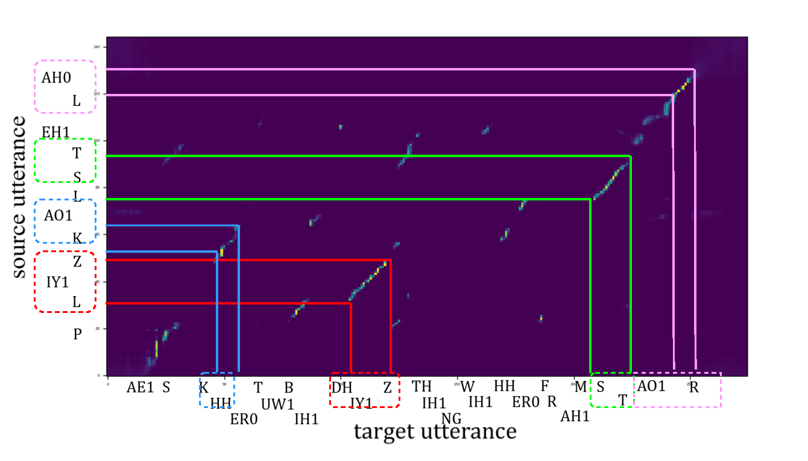

Context-dependent frame-level speaker modeling in voice anonymization
Abstract: The state-of-the-art voice anonymization framework is built upon replacing the voice attributes of the original speaker with those of a pseudo-speaker. Existing methods rely on utterance- and speaker-level representations of speaker attributes. Aiming at improving the performance of voice anonymization, this paper proposes a waveform generation model that leverages frame-level speaker modeling. Specifically, attention weights are obtained from the alignment of linguistic content between original and cohort utterances, enabling context-dependent estimation of speaker representations for frames in anonymized speech. Experiments conducted on the LibriSpeech and VCTK datasets validated the efficacy of the proposed method in improving voice anonymization performance, particularly regarding de-identification, voice distinctiveness and speech quality.
First, We introduce the weight diagram of our attention module.

In short_atten, we demonstrate the attention patterns between utterances with identical content spoken by different speakers (P225_001.wav and P232_0001.wav from the VCTK dataset, both containing "please call stella"). The attention weights exhibit a clear diagonal pattern, indicating that the attention module successfully captures the phonetic alignment between corresponding segments of the source and cohort utterances. This alignment ensures that the selected value vectors (V) through attention weights are content-dependent and phonetically consistent.

In long_atten, we examine the attention mechanism's behavior when processing utterances with different content lengths. The source utterance remains P232_0001.wav, while the target utterance (P232_002.wav) contains "ask her to bring these things from the store". The attention module demonstrates its ability to identify and align phonetically similar units across different linguistic content(e.g. within /AHO L/ and /AO1 R/ in the upper right corner, and /AO1 K/ and /HH K/ in the LOWER left & right corner). This sophisticated alignment capability enables the model to construct content-dependent pseudo vectors by effectively combining relevant phonetic information from diverse speakers and utterances. Specifically, for each frame in the source utterance, the resulting pseudo vector represents a weighted combination of phonetically aligned segments from multiple speakers' utterances, preserving the crucial phonetic structure while allowing for speaker variation.
Here, we showcase three kinds of anonymized speech:
(1)The proposed method
(2)NAC;
(3)PSD;